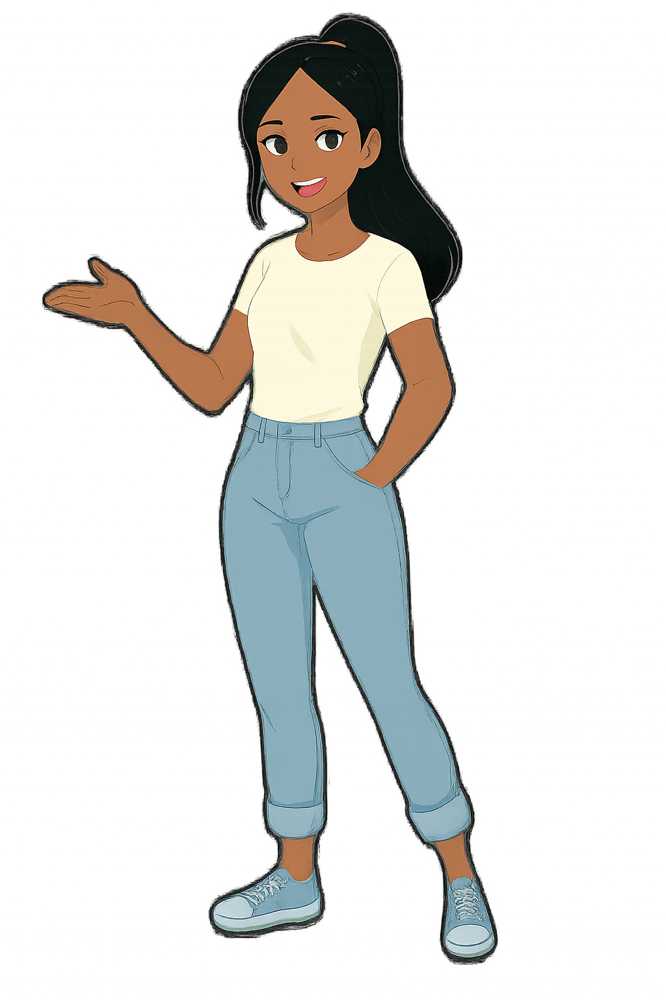
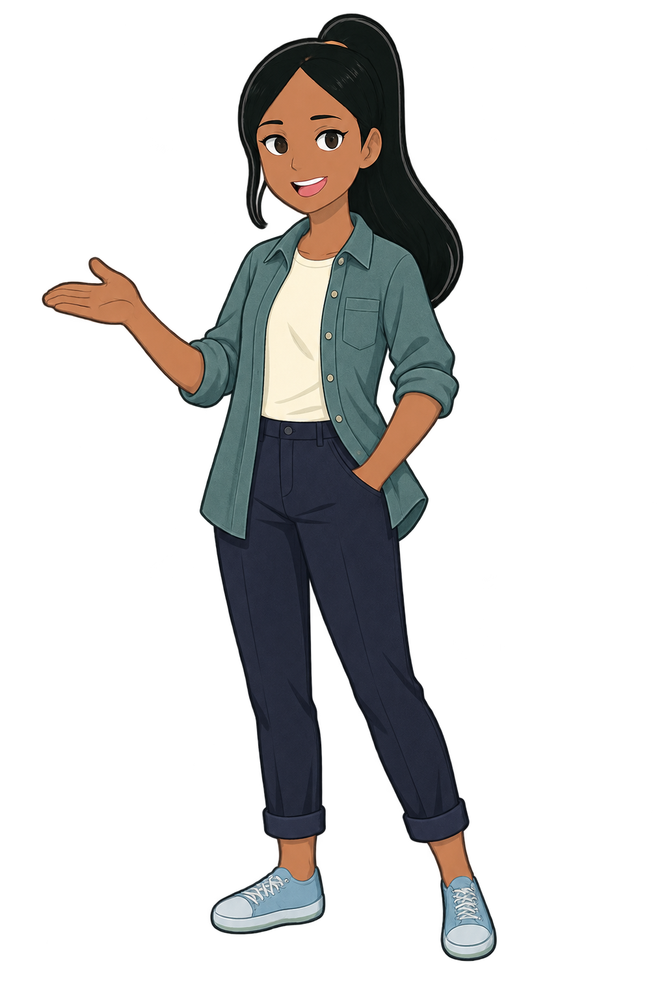

O projeto mudou.
E foi você.
Duas equipes. Um microscópio. Duas confirmações. A nova campanha começa com um problema que precisa de investigação — e termina mostrando quem convive com suas escolhas.
Campanha implementada · validação com jogadores pendenteEntre a bancada
e o compromisso.
A exploração reúne fontes. O quadro liga essas fontes a regras. O plano vira comportamento no calendário. Uma semana depois, as pessoas lembram do combinado.
O que entra no plano
muda o que acontece.
Esta demonstração documental resume a lógica da campanha. Ela não altera seus saves e não substitui o calendário jogável.
No jogo, capacidade e dependências restringem o pacote. Aqui, isolamos os efeitos para facilitar a comparação. Não executar um teste não cria um bug.
Uma semana depois.
Sabrina reaparece com outra roupa. A mudança acompanha uma passagem de tempo escrita no roteiro; sua identidade e seu papel continuam os mesmos.

Primeiro dia · arte existente

Semana seguinte · nova variação integrada
As artes novas foram produzidas com o gerador integrado do Codex. A nova variação usa a personagem existente como referência. Não foi acrescentado um elenco artificial: Carlos, Júlio e Sabrina ganharam mais continuidade; a técnica participa como fonte de domínio.
É assim que se joga.
Capturas feitas em testes do motor. Alguns estados foram preparados para inspecionar a interface; a suíte também percorre a jornada completa.
Da ideia à interação.
Exploração, fontes e uma missão opcional
Três destinos acessíveis pelo cenário ou por lista: bancada, conversa com Carlos e mesa da equipe. A missão “A planilha que ninguém aposenta” revela a necessidade de consulta quando a conexão cai e altera a conversa sobre adoção.
Quadro de requisitos e planejamento
Selecione uma evidência e a regra que ela sustenta. Uma ligação inadequada permanece como hipótese revisável. O planejamento compara capacidade, custos e dependências. A operação principal é seleção por clique ou teclado; arrastar não foi implementado nesta versão.
Calendário, incidente e revisão 2
Experimente sobreposição, reservas adjacentes, preparo insuficiente e equipamentos diferentes. O calendário usa as regras do pacote. Após uma reparação, os resultados anteriores são limpos para exigir nova verificação.
Memória, progresso e quatro famílias de finais
Responsável, marco de retorno e estado do acordo aparecem na pasta de trabalho. O HUD informa etapa e próxima ação. Os desfechos distinguem rotina confiável, espera com propósito, reparação e pendências sem responsável.
Feedback e acessibilidade
Seleções, estados escritos e resultados do calendário tornam a interação perceptível. Transições de cena respeitam a preferência do motor. Fonte maior, teclado, leitura sem cronômetro e consulta da pasta continuam disponíveis. Uso com leitores de tela e aparelhos físicos ainda precisa de avaliação própria.
Implementado nesta versão
- Campanha própria, com as demos anteriores preservadas.
- Estado persistente, investigação e compromissos.
- Regras de calendário, falhas e reparação.
- Novas artes e variação de roupa.
- Este portfólio local, sem dependências de rede.
Ainda precisa de pessoas
- Medir duração e interesse por capítulo.
- Observar agência percebida e vontade de continuar.
- Avaliar transferência para um problema novo.
- Validar acessibilidade com usuários e dispositivos.
- Decidir expansão dos casos de gastos e chamados após essa evidência.
Evidências de verificação · Plano original · Prompts e procedência das artes